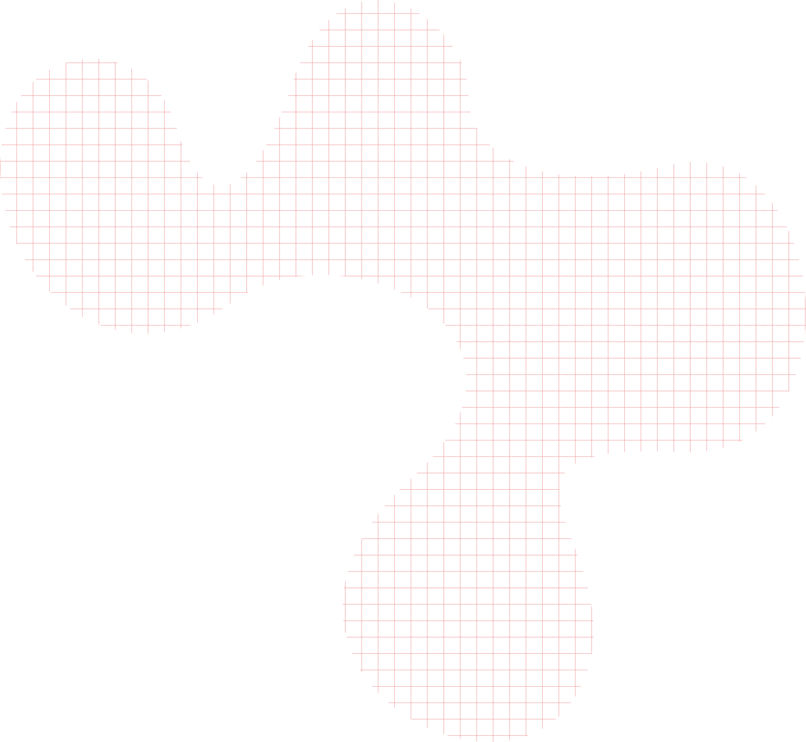
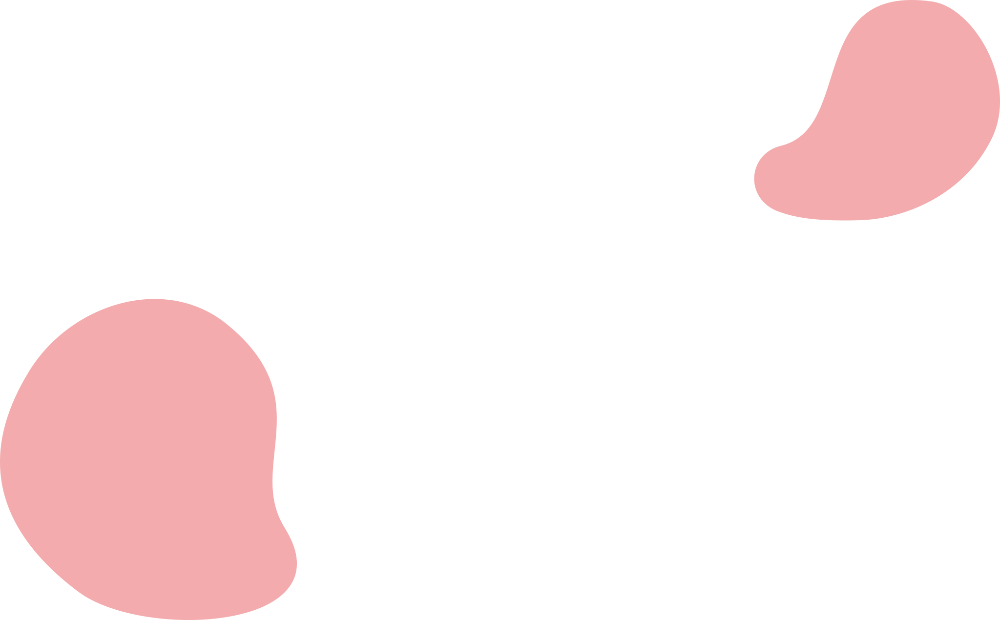
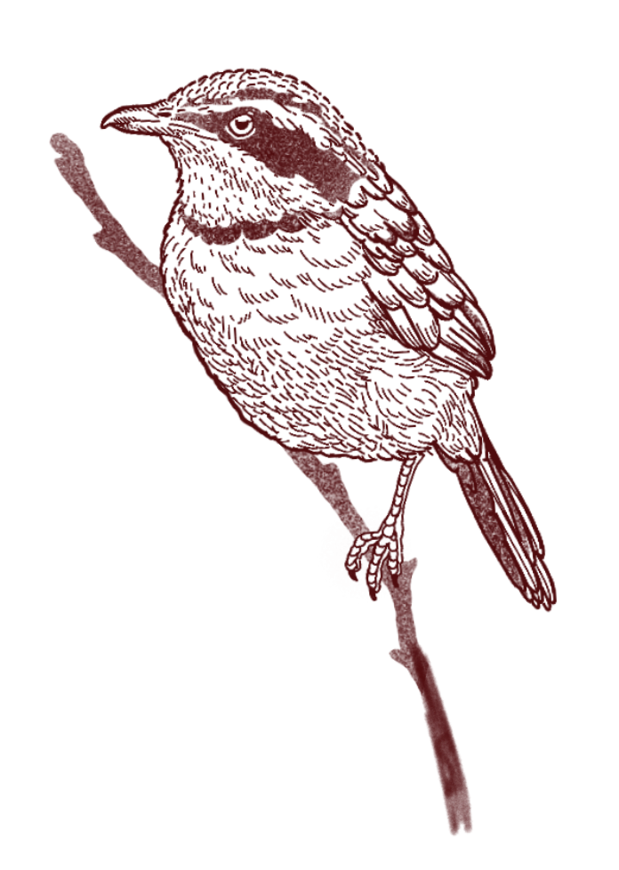
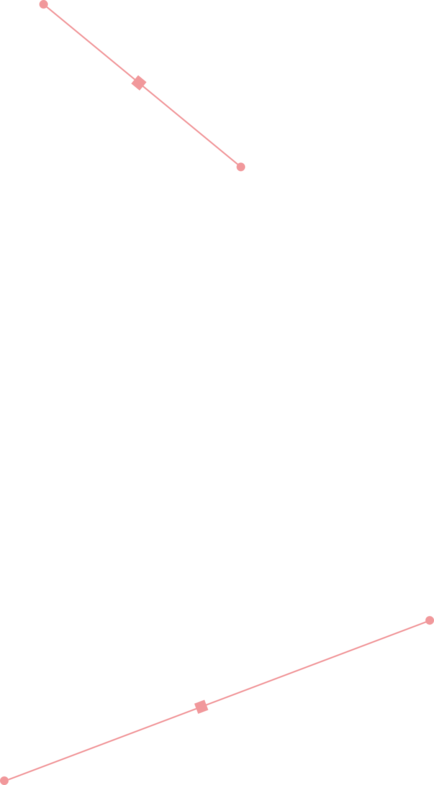
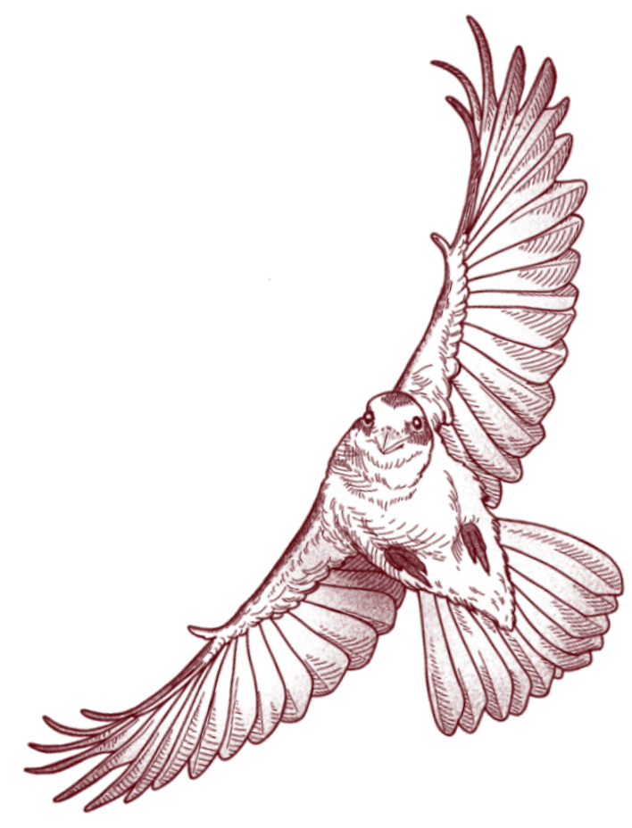
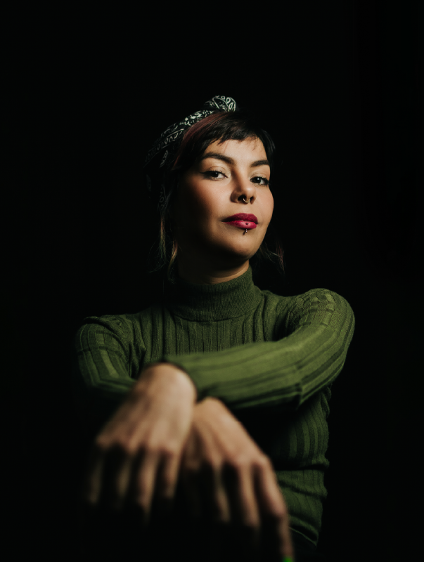

Bridging artistic sensitivity with technical precision — 20 years turning craft into strategy, pixels into pigment, ideas into impact.
Site em construção

For me, no experience is ever discarded — everything becomes repertoire. My journey is rooted in a deeply personal philosophy: creating the best possible outcome with the materials at hand. Long before designing complex digital systems, my hands learned the value of structure and craft through manual arts and leatherwork.
Today, my work exists in the tension between the pixel and the pigment. By merging the analytical rigor of a UX/UI designer with the tactile sensitivity of a tattoo artist and muralist, I bridge technology and art — anchoring purpose, aesthetics and humanity into everyday life.
From print shops to product teams — graphic design, branding, murals, tattoo artistry and UI/UX engineering, all in one timeline. Read it right here or grab the PDF that fits the role.
With 20 years in Graphic Design and UI/UX, I combine technical rigor with artistic sensitivity to create user-centered experiences. Applying Semiotics and Gestalt principles, I communicate deeply through every layer of a layout — from print and packaging to brand systems and digital products. My parallel journey as a muralist and tattoo artist broadens my creative range and gives me the flexibility to solve visual problems on any medium; with Design Thinking, I turn complex requirements into user journeys and implementation-ready interfaces, prototyping my own solutions in HTML, CSS and JavaScript.

Ultimatum builds law practice management software used across Brazil. I returned to the company, this time to lead the modernization of the platform's interface and experience — a strategic evolution centered on users' real daily routines. Here, UX research and market analysis inform every decision, and the prototypes I develop in HTML, CSS, Bootstrap and Chart.js bring design and development closer together, ensuring every proposal is viable for implementation. I integrate AI into my workflow to accelerate research and code — freeing my focus for what matters most: refining the final product.
Across social media, print, outdoor and catalogs, I kept the visual identity consistent for multiple clients as campaigns rolled out. In a field driven by tight deadlines, an agile, organized process let me hold both aesthetic quality and consistency, delivery after delivery.
Between large-scale murals and custom tattoos, I've kept a parallel career that sharpens how I read expectations and sense of spatial design. Turning an abstract concept into something permanent — on skin or on a wall — teaches you to listen closely and decide with precision. Those are instincts I carry into every digital project.
As a partner, I ran branding projects end-to-end, coordinating multidisciplinary teams assembled on demand — researchers, photographers, and print suppliers. That collaborative orchestration, paired with Design Thinking, produced deep visual identities aligned with each client's real needs. In all, I helped over 60 businesses launch or consolidate in the market.
This first stint at Ultimatum put me in charge of the UI, visual identity, and design system of two digital products built from the ground up. The work proved decisive for the company's growth and opened doors to key contracts with several regional chapters of the OAB (Brazil's Bar Association).